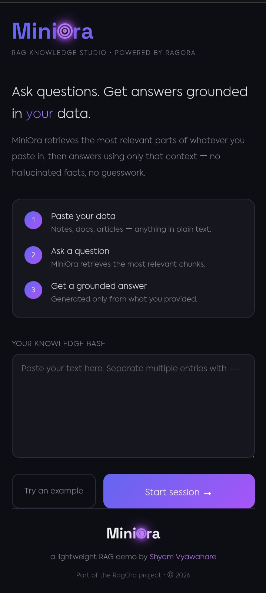
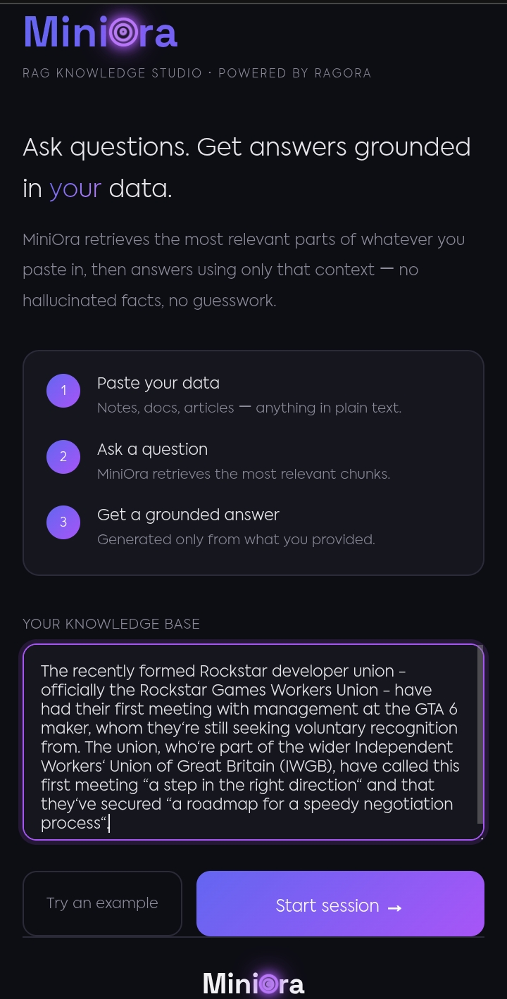
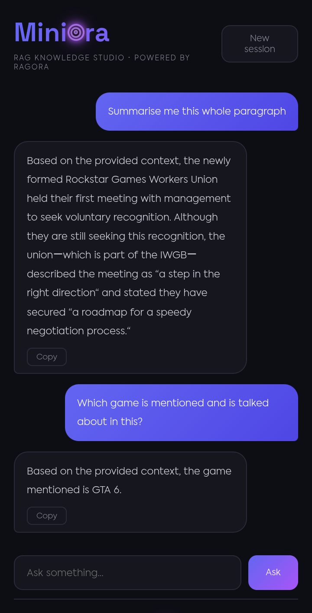
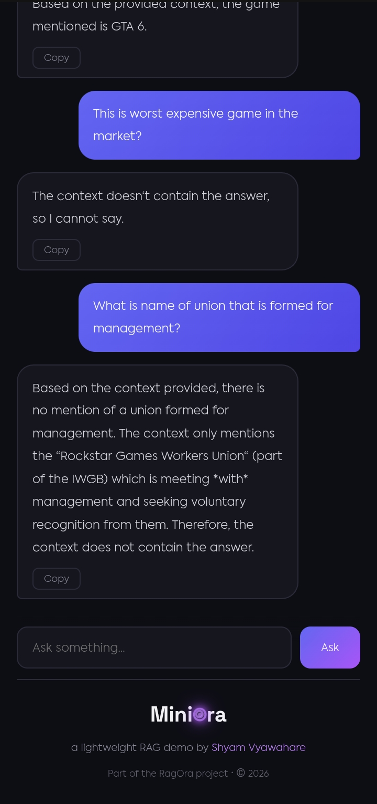

MiniOra
A lightweight RAG Knowledge Studio — built, debugged, and deployed entirely from a mobile phone
A lightweight RAG Knowledge Studio — built, debugged, and deployed entirely from a mobile phone
MiniOra is a lightweight Retrieval-Augmented Generation (RAG) pipeline built as a simplified companion to a larger RAG system, RagOra. The application lets a user paste any block of text as a custom knowledge base, then ask natural-language questions that are answered strictly from that provided context — demonstrating the full RAG loop of retrieval, ranking, and generation in a minimal, dependency-light implementation. What makes this project distinct is the workflow behind it: the entire codebase was written, debugged, and deployed using only a mobile phone, without a local development environment, by directly editing and committing files through GitHub's mobile interface.
HTML, CSS, Vanilla JavaScript
Flask (Python)
scikit-learn (TF-IDF Vectorization, Cosine Similarity)
Google Gemini API (alias-based model calls for long-term stability)
Vercel Serverless Functions
python-dotenv, custom CSS animations, responsive design, environment-based config
Every file — Flask routes, retrieval logic, HTML, CSS, and JavaScript — was written and committed directly through GitHub's mobile interface, with no local IDE or terminal, requiring careful, self-contained file structuring from the start.
Encountered multiple Gemini model retirements mid-project (1.5 Flash, 2.0 Flash) as Google rolled out newer versions. Resolved by switching to alias-based model calls (e.g. "gemini-flash-latest") so the app automatically points to whichever Flash model is currently active, instead of breaking on hardcoded version names.
Diagnosed and fixed a Vercel deployment failure caused by conflicting legacy "builds" and modern "functions" configuration in vercel.json, migrating to the current recommended format while extending function timeout to reliably accommodate LLM response times.
Identified and fixed a silent retrieval bug where a strict similarity-score filter was blocking weakly-matched but still relevant context from ever reaching the model — refined the logic to let the LLM reason over retrieved context rather than have retrieval discard it prematurely.
MiniOra demonstrates a complete, working understanding of the RAG pattern — one of the most in-demand applied AI architectures — built from first principles without relying on heavy frameworks or vector database infrastructure. Beyond the technical implementation, the project reflects an ability to independently debug real production issues (API deprecations, serverless config errors, retrieval logic bugs) and ship a fully deployed, polished product end-to-end using only a mobile device.

MiniOra landing page and knowledge base input

MiniOra context window filled with an example plain text

Session-based chat interface

NO hallucinated response if topic does not exist in provided context
 View project on GitHub
View project on GitHub